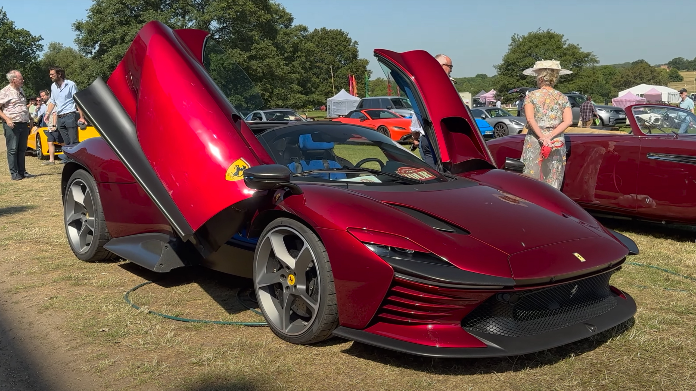
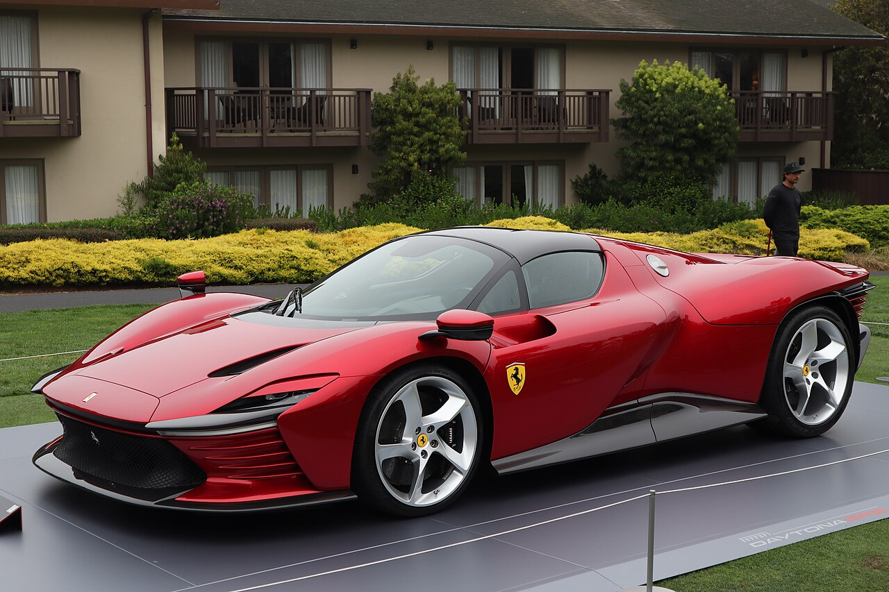

At the 1967 24 Hours of Daytona, Ferrari took the top three places in the first round of the International World Sports Car Championship. The 330 P3/4, 330 P4 and 412 P that famously shot past the chequered flag side by side perfectly encapsulated the spirit of the sports prototypes of the 1960s, a decade now considered the golden era of closed wheel racing. The Ferrari Daytona SP3, the second car to join the limited edition Icona series, pays homage to the mid-rear-engined Ferrari V12 sports prototypes that earned the marque its unparalleled motor sport status.


Although inspired by the racing cars of the 1960s, the Ferrari Daytona SP3 is clothed in original, modern forms. Its expressive power celebrates the volumes of sports prototypes to wholly contemporary effect. The car’s overall balance is underscored by monolithic volumes that are a powerful articulation of the long-appreciated skills of Italian coachbuilding at its finest. The fluidity of its masses melds effortlessly with sharper surfaces, to produce the sense of effortless aesthetic balance that has long been a signature of Maranello’s design history.